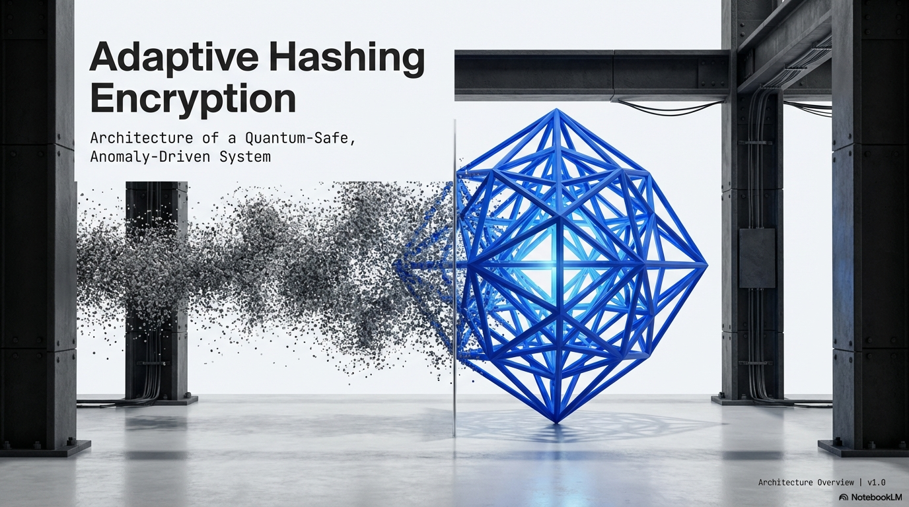

This experience places your introduction in augmented reality. Allow camera access, then point the camera at a Hiro marker printed or displayed on a second screen. Keep the marker fully in frame.
Camera access is used for marker tracking in this browser session. Your portfolio remains available if your device does not support AR.